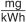

KÜO
Ausfertigungsdatum: 16.06.2009
Vollzitat:
"Kehr- und Überprüfungsordnung vom 16. Juni 2009 (BGBl. I S. 1292), die zuletzt durch Artikel 1 der Verordnung vom 15. Januar 2025 (BGBl. 2025 I Nr. 12) geändert worden ist"
| Stand: | Zuletzt geändert durch Art. 1 V v. 15.1.2025 I Nr. 12 |
(+++ Textnachweis ab: 1.1.2010 +++)Abweichendes Landesrecht:
(+++ Amtlicher Hinweis des Normgebers auf EG-Recht:
Umsetzung der
EGRL 34/98 (CELEX Nr: 398L0034) +++)
| Anlagen und deren Benutzung (soweit sie nach § 1 der Kehrung oder Überprüfung unterliegen) | Anzahl der Kehrungen im Kalenderjahr | Anzahl der Überprüfungen | |
|---|---|---|---|
| 1 | Feste Brennstoffe | ||
| 1.1 | ganzjährig regelmäßig benutzte Feuerstätte und Räucheranlage | 4 | |
| 1.2 | regelmäßig in der üblichen Heizperiode benutzte Feuerstätte | 3 | |
| 1.3 | Feuerstätte zur Verbrennung von Holzpellets (Brennstoffe nach § 3 Absatz 1 Nummer 5a 1. BImSchV) | 2 | |
| 1.4 | Blockheizkraftwerk | 2 | |
| 1.5 | nach § 15 1. BImSchV wiederkehrend zu überwachende Feuerstätte | 2 | |
| 1.6 | mehr als gelegentlich, aber nicht regelmäßig benutzte Feuerstätte und Räucheranlage | 2 | |
| 1.7 | gelegentlich benutzte Feuerstätte und Räucheranlage | 1 | |
| 1.8 | notwendige Verbrennungsluft- und Abluftanlagen | einmal im Kalenderjahr | |
| 1.9 | betriebsbereite, jedoch dauernd unbenutzte Feuerstätte | einmal im Kalenderjahr | |
| 2 | Flüssige Brennstoffe | ||
| 2.1 | regelmäßig benutzte Feuerstätte | 3 | |
| 2.2 | mehr als gelegentlich, aber nicht regelmäßig benutzte Feuerstätte | 2 | |
| 2.3 | gelegentlich benutzte Feuerstätte | 1 | |
| 2.4 | Verbrennungsluft- und Abluftanlagen von Anlagen nach Nummer 2.1 – 2.3 | einmal im Kalenderjahr | |
| 2.5 | betriebsbereite, jedoch dauernd unbenutzte Feuerstätte | einmal im Kalenderjahr | |
| 2.6 | nach § 15 1. BImSchV oder der 44. BImSchV wiederkehrend zu überwachende Feuerstätte | einmal im Kalenderjahr | |
| 2.7 | Blockheizkraftwerk, Wärmepumpe, ortsfester Verbrennungsmotor und Brennstoffzellenheizgerät | einmal im Kalenderjahr | |
| 2.8 | Anlage nach Nummer 2.6, die mit schwefelarmem Heizöl nach DIN 51603 Teil 1 oder anderen leichten Heizölen mit gleichwertiger Qualität betrieben wird, sofern es sich um eine raumluftabhängige Brennwertfeuerstätte an einer Abgasanlage für Überdruck oder eine raumluftunabhängige Feuerstätte handelt | einmal in jedem zweiten Kalenderjahr | |
| 2.9 | Anlage nach Nummer 2.7, die mit schwefelarmem Heizöl nach DIN 51603 Teil 1 oder anderen leichten Heizölen mit gleichwertiger Qualität betrieben wird | einmal in jedem zweiten Kalenderjahr | |
| 2.10 | Anlage nach Nummer 2.8 mit selbstkalibrierender kontinuierlicher Regelung des Verbrennungsprozesses | einmal in jedem dritten Kalenderjahr | |
| 2.11 | ortsfeste Netzersatzanlage (Notstromaggregat) | einmal in jedem dritten Kalenderjahr | |
| 3 | Gasförmige Brennstoffe | ||
| 3.1 | raumluftabhängige Feuerstätte | einmal im Kalenderjahr | |
| 3.2 | raumluftunabhängige Feuerstätte | einmal in jedem zweiten Kalenderjahr | |
| 3.3 | raumluftabhängige Brennwertfeuerstätte an einer Abgasanlage für Überdruck | einmal in jedem zweiten Kalenderjahr | |
| 3.4 | Blockheizkraftwerk, Wärmepumpe, ortsfester Verbrennungsmotor und Brennstoffzellenheizgerät | einmal in jedem zweiten Kalenderjahr | |
| 3.5 | Anlage nach 3.2 oder 3.3 mit selbstkalibrierender kontinuierlicher Regelung des Verbrennungsprozesses | einmal in jedem dritten Kalenderjahr | |
| Datum des Feuerstättenbescheides: | ||
| Objektnummer laut Feuerstättenbescheid: |
| Bevollmächtigte(r) Bezirksschornsteinfeger(in) | Liegenschaft: | |||
| Formblatt zum Nachweis der Durchführung von Schornsteinfegerarbeiten (§ 4 Absatz 1 des Schornsteinfeger-Handwerksgesetzes – SchfHwG – vom 26. November 2008* , BGBl. I S. 2242) |
| Folgende Anlagen sind nach der Verordnung über die Kehrung und Überprüfung von Anlagen (Kehr- und Überprüfungsordnung – KÜO) vom 16. Juni 2009 (BGBl. I S. 1292), nach Rechtsverordnungen nach § 1 Absatz 1 Satz 3 SchfHwG oder nach der Ersten Verordnung zur Durchführung des Bundes-Immissionsschutzgesetzes (Verordnung über kleine und mittlere Feuerungsanlagen – 1. BImSchV vom 26. Januar 2010, BGBl. I S. 38) jeweils an dem angegebenen Datum gekehrt, überprüft oder überwacht worden: |
| Laut Feuerstättenbescheid | Datum der Arbeits- ausführung | Mängel vorhanden ja/nein | Änderungsmitteilung/Mängelart/ Bemerkungen (ggf. Verweis auf gesondertes Blatt) | |
| Nr. | Anlage (Art/Standort oder Verweis auf Anhang) | |||
| Name und Anschrift des Schornsteinfegerbetriebes | Die Schornsteinfegerarbeiten sind entsprechend dem Feuerstättenbescheid ordnungsgemäß durchgeführt worden. |
| Handwerkskammer, bei der der Betrieb in der Handwerksrolle eingetragen ist bzw. bei der die Anzeige nach § 9 EU/EWR-Handwerk-Verordnung erstattet wurde: | Datum Unterschrift des ausführenden Schornsteinfegers |
Ausführende(r) Schornsteinfeger(in) (in Druckbuchstaben): |
| Anschrift des Schornsteinfegerbetriebes | Datum der Arbeitsausführung: | |||
| [ ] Überprüfung nach § 1 KÜO* [ ] Wiederholungsmessung nach § 1 Absatz 2 KÜO [ ] Erstmessung nach § 14 Absatz 2 1. BImSchV [ ] Wiederkehrende Messung nach § 15 Absatz 3 1. BImSchV [ ] Wiederholungsmessung nach § 14 Absatz 5 1. BImSchV [ ] Wiederholungsmessung nach § 15 Absatz 5 1. BImSchV | ||||
| Ausfertigung für |
| Name und Anschrift des Eigentümers/Verwalters | Betreiber/Aufstellungsort der Anlage: | |||
| Gebäudeteil: | ||||
| Bescheinigung | über das Ergebnis der Überprüfung und Messung an einer Feuerstätte für gasförmige Brennstoffe gemäß der Verordnung über die Kehrung und Überprüfung von Anlagen (Kehr- und Überprüfungsordnung – KÜO) vom 16. Juni 2009 (BGBl. I S. 1292), nach Rechtsverordnungen nach § 1 Absatz 1 Satz 3 SchfHwG oder der Ersten Verordnung zur Durchführung des Bundes-Immissionsschutzgesetzes (Verordnung über kleine und mittlere Feuerungsanlagen – 1. BImSchV vom 26. Januar 2010, BGBl. I S. 38) |
| Wärmeaustauscher: Hersteller, Typ, Herstell-Nr., Errichtung | Leistungsbereich/Leistung bei der Messung | Nennleistung | |
| Brenner: Hersteller, Typ, Herstell-Nr., Errichtung | Brennerart | Leistungsbereich/Leistung bei der Messung | Brennstoff |
| Feuerstättenart | Art der Anlage | ||
| Herstellerbescheinigung nach § 6 1. BImSchV () ja () nein | |||
| Überprüfungsergebnis gemäß KÜO (✓ = in Ordnung, X = mangelhaft, – = nicht zutreffend): | ||||||||
| Verbrennungsluft/Lüftung | Abgasabzug: | Abgasleitung | ||||||
| Feuerstätte: | – an der Strömungssicherung | O2-Gehalt im Abgas | % | |||||
| – Befestigung/Abstände | – in Brennerhöhe | unverdünnter CO-Gehalt | ppm | |||||
| – äußerer Zustand | – an anderer Stelle | O2-Differenz im Ringspalt | % | |||||
| Brenner/Heizgasweg | Abgasklappe | Lufttemperatur im Ringspalt | °C | |||||
| Flammenbild | Verbindungsstück | Druckdifferenz im Ringspalt | Pa | |||||
| ||||||||
| [ ] Die Mängel stellen z. Zt. noch keine unmittelbare Gefahr dar, eine Überprüfung durch einen Fachbetrieb wird empfohlen. [ ] Die Mängel sind aus Sicherheitsgründen bis zum ……………… zu beseitigen. [ ] Aufgrund der festgestellten Mängel ist eine zusätzliche Überprüfung der Feuerungsanlage erforderlich. | ||||||||
| Messergebnis gemäß 1. BImSchV: | Grenzwert für Abgasverlust | % | |||
| Wärmeträgertemperatur | °C | Verbrennungslufttemperatur | °C | Abgastemperatur | °C |
| Sauerstoffgehalt im Abgas | % | Druckdifferenz | Pa | Abgasverlust | % |
| [ ] Das Messergebnis entspricht der Verordnung. | Messunsicherheit | % | |||
| [ ] Das Messergebnis entspricht nicht der Verordnung, weil ..... Der Betreiber ist verpflichtet, die notwendigen Verbesserungsmaßnahmen an der Anlage zu treffen. Die Messung ist bis zum …………………………………………… zu wiederholen. | |||||
| Bemerkungen: | |||||
| Messgeräte-Identifikationsnummer(n) |
| Falls Mängel festgestellt worden sind, die innerhalb einer Frist zu beseitigen sind, oder das Messergebnis nicht der Verordnung entspricht, geben Sie bitte Nachricht, sobald die Mängel beseitigt sind bzw. die Wiederholungsmessung erfolgen kann. |
| Anschrift des Schornsteinfegerbetriebes | Datum der Arbeitsausführung: | |||
| [ ] Überprüfung nach § 1 KÜO* [ ] Wiederholungsmessung nach § 1 Absatz 2 KÜO [ ] Erstmessung nach § 14 Absatz 2 1. BImSchV [ ] Wiederkehrende Messung nach § 15 Absatz 3 1. BImSchV [ ] Wiederholungsmessung nach § 14 Absatz 5 1. BImSchV [ ] Wiederholungsmessung nach § 15 Absatz 5 1. BImSchV | ||||
| Ausfertigung für |
| Name und Anschrift des Eigentümers/Verwalters | Betreiber/Aufstellungsort der Anlage: | |||
| Gebäudeteil: | ||||
| Bescheinigung | über das Ergebnis der Überprüfung und Messung an einer Feuerstätte für flüssige Brennstoffe gemäß der Verordnung über die Kehrung und Überprüfung von Anlagen (Kehr- und Überprüfungsordnung – KÜO) vom 16. Juni 2009 (BGBl. I S. 1292), nach Rechtsverordnungen nach § 1 Absatz 1 Satz 3 SchfHwG oder der Ersten Verordnung zur Durchführung des Bundes-Immissionsschutzgesetzes (Verordnung über kleine und mittlere Feuerungsanlagen – 1. BImSchV vom 26. Januar 2010, BGBl. I S. 38) |
| Wärmeaustauscher: Hersteller, Typ, Herstell-Nr., Errichtung | Leistungsbereich/Leistung bei der Messung | Nennleistung | |
| Brenner: Hersteller, Typ, Herstell-Nr., Errichtung | Brennerart | Leistungsbereich/Leistung bei der Messung | Brennstoff |
| Feuerstättenart | Art der Anlage | ||
| Herstellerbescheinigung nach § 6 1. BImSchV [ ] Ja [ ] Nein | |||
| Überprüfungsergebnis gemäß KÜO (✓ = in Ordnung, X = mangelhaft, – = nicht zutreffend): | ||||||
| Verbrennungsluft/Lüftung | Brenner/Heizgasweg | Verbindungsstück | ||||
| Feuerstätte: | Abgasabzug: | Abgasleitung | ||||
| O2-Gehalt im Abgas % | ||||||
| – Befestigung/Abstände | – in Brennerhöhe | unverdünnter CO-Gehalt | ppm | |||
| – äußerer Zustand | – an anderer Stelle | O2-Differenz im Ringspalt | % | |||
| [ ] Folgende Mängel wurden festgestellt: | Lufttemperatur im Ringspalt | °C | ||||
| Druckdifferenz im Ringspalt | Pa | |||||
| [ ] Es wurden keine Mängel festgestellt. | ||||||
| [ ] Die Mängel stellen z. Zt. noch keine unmittelbare Gefahr dar, eine Überprüfung durch einen Fachbetrieb wird empfohlen. [ ] Die Mängel sind aus Sicherheitsgründen bis zum ………………………… zu beseitigen. [ ] Aufgrund der festgestellten Mängel ist eine zusätzliche Überprüfung der Feuerungsanlage erforderlich. | ||||||
| Grenzwerte: | Rußzahl | CO-Gehalt | 1 300  | |||||||
| Messergebnis gemäß 1. BImSchV: | Ölderivate | Keine | Abgasverlust | % | ||||||
| Rußzahl-Einzelwerte | Rußzahl-Mittelwert | Ölderivate | CO-Gehalt | |||||||
| Wärmeträgertemperatur | °C | Verbrennungslufttemperatur | °C | Abgastemperatur | °C | |||||
| Sauerstoffgehalt im Abgas | % | Druckdifferenz | Pa | Abgasverlust | % | |||||
| [ ] Das Messergebnis entspricht der Verordnung. | Messunsicherheit | % | ||||||||
| [ ] Das Messergebnis entspricht nicht der Verordnung, weil ………………………………………………………………………………….. Der Betreiber ist verpflichtet, die notwendigen Verbesserungsmaßnahmen an der Anlage zu treffen. Die Messung ist bis zum ………………………… zu wiederholen. | ||||||||||
| Bemerkungen: | ||||||||||
| Messgeräte-Identifikationsnummer(n) |
| Falls Mängel festgestellt worden sind, die innerhalb einer Frist zu beseitigen sind, oder das Messergebnis nicht der Verordnung entspricht, geben Sie bitte Nachricht, sobald die Mängel beseitigt sind bzw. die Wiederholungsmessung erfolgen kann. |
| Anschrift des Schornsteinfegerbetriebes | Datum der Arbeitsausführung: | |||
| [ ] Überprüfung nach § 14 Absatz 1 1. BImSchV* [ ] Messung und Überprüfung nach § 14 Absatz 2 1. BImSchV [ ] Messung und Überprüfung nach § 15 Absatz 1 bzw. § 25 Absatz 4 1. BImSchV [ ] Wiederholungsüberprüfung nach § 14 Absatz 5 1. BImSchV [ ] Beratung nach § 4 Absatz 8 1. BImSchV | ||||
| Ausfertigung für |
| Name und Anschrift des Eigentümers/Verwalters | Betreiber/Aufstellungsort der Anlage: | |||
| Gebäudeteil: | ||||
| Bescheinigung | über das Ergebnis der Überprüfung, Messung und Beratung für eine Feuerungsanlage für feste Brennstoffe gemäß der Ersten Verordnung zur Durchführung des Bundes-Immissionsschutzgesetzes (Verordnung über kleine und mittlere Feuerungsanlagen – 1. BImSchV vom 26. Januar 2010, BGBl. I S. 38) |
| Feuerstätte: Hersteller, Typ, Herstell-Nr. | Baujahr | Datum/Jahr der Errichtung | Leistungsbereich/Nennwärmeleistung kW |
| Feuerstättenbauart | Beschickungsart | Art der Anlage | Teillastmessung [ ] ja [ ] nein |
| Eingesetzte Brennstoffe nach § 3 Absatz 1 (Nr.) | Wärmespeicher vorhanden [ ] ja [ ] nein | Wärmespeichervolumen Liter | |
| Ordnungsgemäßer technischer Zustand der Feuerungsanlage (§ 4 Absatz 1): | [ ] ja [ ] nein |
| Vorhandenes Wärmespeichervolumen ausreichend (§ 5 Absatz 4): | [ ] ja [ ] nein |
| ausreichende Höhe und Firstnähe der Schornsteinmündung (§ 19 Absatz 1 Satz 1 bis 4, Absatz 2 Satz 1 Nummer 1): | [ ] ja [ ] nein |
| Abstand zu Lüftungsöffnungen, Fenstern und Türen ausreichend (§ 19 Absatz 1 Satz 5, Absatz 2 Satz 1 Nummer 2): | [ ] ja [ ] nein |
| Feuerungsanlage nach Herstellerangaben für verwendete Brennstoffe (§ 4 Absatz 1) bzw. § 5 Absatz 2 und 3 geeignet: | [ ] ja [ ] nein |
| Messergebnis (Werte im Abgas): | Kohlenmonoxidgehalt | Staubgehalt | |||
| Wärmeträgertemperatur °C | Sauerstoffgehalt % | Grenzwert (§ 5 Absatz 1 bzw. § 25 Absatz 2) | g/m3 | g/m3 | |
| Messunsicherheit (Anlage 2 Nummer 2.3) | g/m3 | g/m3 | |||
| Abgastemperatur °C | Druckdifferenz Pa | Messwert bezogen auf … % Sauerstoff (Anlage 2 Nummer 2.2) | g/m3 | g/m3 | |
| Messwert abzüglich Messunsicherheit (Anlage 2 Nummer 2.3) | g/m3 | g/m3 | |||
| [ ] Das Ergebnis entspricht der Verordnung. | |||||
| [ ] Das Ergebnis entspricht nicht der Verordnung, weil | |||||
| [ ] Die Mängel sind zu beseitigen. Danach ist bis zum …………………………………………… eine Wiederholungsüberprüfung erforderlich. Geben Sie bitte Nachricht, sobald diese erfolgen kann (§ 14 Absatz 5). |
| Beratung wurde in folgenden Punkten durchgeführt (§ 4 Absatz 8, für handbeschickte Feuerungsanlagen): [ ] Sachgerechte Bedienung der Feuerungsanlage [ ] Ordnungsgemäße Lagerung des Brennstoffes [ ] Besonderheiten beim Umgang mit festen Brennstoffen | [ ] Feuchtegehalt im Brennstoff wurde gemessen (§ 3 Absatz 3): Mittelwert: % Sofern der Feuchtegehalt … % oder mehr beträgt, ist der Brennstoff vor der Verwendung nachzutrocknen. |
| Messgeräte-Identifikationsnummer(n) |
| Bemerkungen: |
| Falls Mängel festgestellt worden sind, die innerhalb einer Frist zu beseitigen sind, oder das Messergebnis nicht der Verordnung entspricht, geben Sie bitte Nachricht, sobald die Mängel beseitigt sind bzw. die Wiederholungsüberprüfung erfolgen kann. |
| Anschrift des Schornsteinfegerbetriebes | Datum der Arbeitsausführung: | |||
| [ ] Überprüfung nach § 14 Absatz 1 1. BImSchV* [ ] Überprüfung nach § 14 Absatz 2 1. BImSchV [ ] Überprüfung nach § 15 Absatz 2 1. BImSchV [ ] Wiederholungsüberprüfung nach § 14 Absatz 5 1. BImSchV [ ] Beratung nach § 4 Absatz 8 1. BImSchV | ||||
| Ausfertigung für |
| Name und Anschrift des Eigentümers/Verwalters | Betreiber/Aufstellungsort der Anlage: | |||
| Gebäudeteil: | ||||
| Bescheinigung | über das Ergebnis der Überprüfung und Beratung für eine Feuerungsanlage für feste Brennstoffe gemäß der Ersten Verordnung zur Durchführung des Bundes-Immissionsschutzgesetzes (Verordnung über kleine und mittlere Feuerungsanlagen – 1. BImSchV vom 26. Januar 2010, BGBl. I S. 38) |
| Feuerstätte: Hersteller, Typ, Herstell-Nr. | Datum auf dem Typenschild | Datum/Jahr der Errichtung | Leistungsbereich/Nennwärmeleistung kW |
| Feuerstättenbauart nach Anlage 4 | Beschickungsart | Art der Anlage | |
| Eingesetzte Brennstoffe nach § 3 Absatz 1 (Nr.) | |||
| Positive Prüfbescheinigung liegt vor (§ 4 Absatz 3 oder Absatz 5 Nummer 2) |
| Offener Kamin, zugelassen nur für gelegentlichen Betrieb (§ 4 Absatz 4), oder historische Feuerstätte (§ 26 Absatz 3 Nummer 5) |
| Einrichtung zur Reduzierung der Staubemissionen vorhanden (§ 4 Absatz 5) |
| Messung durch eine Schornsteinfegerin oder einen Schornsteinfeger positiv (§ 4 Absatz 5 Nummer 1) |
| Ordnungsgemäßer technischer Zustand der Feuerungsanlage (§ 4 Absatz 1): | [ ] ja [ ] nein |
| Feuerungsanlage nach Herstellerangaben für verwendete Brennstoffe (§ 4 Absatz 1) geeignet: | [ ] ja [ ] nein |
| Abstand der Austrittsöffnung des Schornsteins zum Dach ausreichend (§ 19 Absatz 1 Nummer 1): | [ ] ja [ ] nein |
| Abstand zu Lüftungsöffnungen, Fenstern und Türen ausreichend (§ 19 Absatz 1 Satz 5, Absatz 2 Satz 1 Nummer 2): | [ ] ja [ ] nein |
| [ ] Das Ergebnis entspricht der Verordnung. | |||||
| [ ] Das Ergebnis entspricht nicht der Verordnung, weil | |||||
| [ ] Die Mängel sind zu beseitigen. Danach ist bis zum …………………………………………… eine Wiederholungsüberprüfung erforderlich. Geben Sie bitte Nachricht, sobald diese erfolgen kann (§ 14 Absatz 5). |
| Beratung wurde in folgenden Punkten durchgeführt (§ 4 Absatz 8, für handbeschickte Feuerungsanlagen): [ ] Sachgerechte Bedienung der Feuerungsanlage [ ] Ordnungsgemäße Lagerung des Brennstoffes [ ] Besonderheiten beim Umgang mit festen Brennstoffen | [ ] Feuchtegehalt im Brennstoff wurde gemessen (§ 3 Absatz 3): Mittelwert: % Sofern der Feuchtegehalt … % oder mehr beträgt, ist der Brennstoff vor der Verwendung nachzutrocknen. |
| Bemerkungen: |
| Messgeräte-Identifikationsnummer(n) |
| Falls Mängel festgestellt worden sind, die innerhalb einer Frist zu beseitigen sind, oder das Messergebnis nicht der Verordnung entspricht, geben Sie bitte Nachricht, sobald die Mängel beseitigt sind bzw. die Wiederholungsüberprüfung erfolgen kann. |
| Anschrift des Schornsteinfegerbetriebes | Datum der Arbeitsausführung: | |||
| [ ] Überprüfung nach § 1 KÜO* [ ] Wiederholungsüberprüfung nach § 1 Absatz 2 KÜO | ||||
| Ausfertigung für |
| Name und Anschrift des Eigentümers/Verwalters | Betreiber/Aufstellungsort der Anlage: | |||
| Gebäudeteil: | ||||
| Bescheinigung | über das Ergebnis der Überprüfung an [ ] einem Blockheizkraftwerk (BHKW) [ ] einem ortsfesten Verbrennungsmotor [ ] einem Notstromaggregat für | [ ] einer Wärmepumpe [ ] einem Brennstoffzellenheizgerät [ ] … |
| [ ] gasförmige Brennstoffe [ ] flüssige Brennstoffe [ ] feste Brennstoffe | ||
| gemäß der Verordnung über die Kehrung und Überprüfung von Anlagen (Kehr- und Überprüfungsordnung – KÜO) vom 16. Juni 2009 (BGBl. I S. 1292) oder nach Rechtsverordnungen nach § 1 Absatz 1 Satz 3 SchfHwG | ||
| Anlagenbeschreibung: Hersteller, Typ, Herstell-Nr., Errichtung | |||
| Nennleistung | Thermische Leistung | Aufstellraum | Raumgröße |
| raumluftabhängig [ ] Sonstiges: raumluftunabhängig [ ] | |||
| Abgasanlage für | ||||
| [ ] Unterdruck (N) | [ ] Überdruck (P) | [ ] hohen Überdruck (H) | [ ] … | [ ] dicht geschweißt |
| Überprüfungsergebnis gemäß KÜO (✓ = in Ordnung, X = mangelhaft, – = nicht zutreffend): | |||||||
| Verbrennungsluft/Lüftung | Abgasabzug: | O2-Gehalt im Abgas | % | ||||
| Gerät: | – am Gerät | unverdünnter CO-Gehalt | ppm | ||||
| – Standsicherheit | – am Abgasstutzen | O2-Differenz im Ringspalt | % | ||||
| – äußerer Zustand | – am Schalldämpfer | Lufttemperatur im Ringspalt | °C | ||||
| – Abstände | Verbindungsstück | Druckdifferenz im Ringspalt | Pa | ||||
| Schalldämpfer | Abgasleitung | Abgastemperatur | °C | ||||
| |||||||
| [ ] Die Mängel stellen z. Zt. noch keine unmittelbare Gefahr dar, eine Überprüfung durch einen Fachbetrieb wird empfohlen. [ ] Die Mängel sind aus Sicherheitsgründen bis zum ……………… zu beseitigen. [ ] Aufgrund der festgestellten Mängel ist eine zusätzliche Überprüfung der Feuerungsanlage erforderlich. | |||||||
| Messgeräte-Identifikationsnummer(n) |
| Falls Mängel festgestellt worden sind, die innerhalb einer Frist zu beseitigen sind, geben Sie bitte Nachricht, sobald die Mängel beseitigt sind bzw. die Wiederholungsüberprüfung erfolgen kann. |
| Nr. | Bezeichnung | Anzahl der Arbeitswerte | ||
|---|---|---|---|---|
| 1 | Feuerstättenbescheid (§ 14a SchfHwG) | |||
| Ausstellung und, soweit vom Eigentümer veranlasst, Änderung eines Feuerstättenbescheides | ||||
| 1.1 | – | bei bis zu 3 Feuerungsanlagen | 10,0 | |
| 1.2 | – | bei mehr als 3 Feuerungsanlagen | zusätzlich 2,0 für jede weitere Feuerungsanlage, insgesamt höchstens 30,0 je Feuerstättenbescheid | |
| 1.3 | Je zusätzliche Ausfertigung eines Feuerstättenbescheides | 2,0 | ||
| 1.4 | Ablehnung eines Antrags auf Herabsetzung der Kehrhäufigkeit nach § 1 Absatz 5a | 25,0 | ||
| 2 | Feuerstättenschau (§ 14 Absatz 1 SchfHwG) | |||
| 2.1 | Grundwert je Gebäude oder in Sondereigentum stehender Anlage nach § 20 Absatz 2 SchfHwG einschließlich der ersten Nutzungseinheit | 11,7 | ||
| 2.2 | Grundwert für jede weitere Nutzungseinheit | 4,0 | ||
| 2.3 | Feuerstättenschau an alleinstehenden Abgasanlagen und Gruppen von Abgasanlagen: | |||
| 2.3.1 | für jeden vollen und angefangenen Meter von senkrechten Teilen | 1,0 | ||
| 2.3.2 | für jeden vollen und angefangenen Meter von waagerechten Teilen ab einer Länge von 10 Metern | 1,0 | ||
| Anmerkung: Bei Abgasanlagen außerhalb von Gebäuden werden maximal 3 Meter berechnet. | ||||
| 2.4 | Zuschlag je Feuerstätte | 6,0 | ||
| 2.5 | Zuschläge für erhöhten Arbeitsaufwand | |||
| 2.5.1 | – | auf den Inseln und Halligen, mit Ausnahme der Inseln, die mit einer festen Straßenverbindung mit dem Festland verbunden sind, und der Hamburger Hallig, erhöhen sich die Gebühren nach Nummer 2.1 bis Nummer 2.4 | ||
| 1. | für Bezirke auf einer Insel oder Hallig und für Bezirke, die sich auf das Festland und Teile von einer Insel erstrecken, um 10 Prozent und | |||
| 2. | für Bezirke, die sich auf mehrere Inseln oder Halligen oder das Festland und andere als die unter Nummer 1 fallenden Inseln und Halligen erstrecken, um 25 Prozent | |||
| 2.5.2 | – | wenn das Gebäude besonders schwer erreichbar ist, insbesondere Berggasthof, Alm, Jagdhütte, Forstdiensthütte, je Minute der Wegezeit sowie besondere Auslagen | 0,7 | |
| 2.6 | Zuschlag je Begehung einer Nutzungseinheit, die zweimal jeweils mindestens fünf Arbeitstage vor der beabsichtigten Durchführung angekündigt und ohne sachlichen Grund verhindert wurde | 15,0 | ||
| 2.7 | Zuschlag zu den angefallenen Arbeitswerten je Feuerstättenschau, die auf besonderen Wunsch ausgeführt wird | |||
| 2.7.1 | – | von Montag bis Freitag vor 6.00 Uhr oder nach 18.00 Uhr oder am Samstag | in Höhe von 50 Prozent der Beträge | |
| 2.7.2 | – | an Sonn- und gesetzlichen Feiertagen | in Höhe von 100 Prozent der Beträge | |
| 3 | Sonstige Arbeitsgebühren | |||
| 3.1 | Überprüfung des Feuchtegehalts fester Brennstoffe im Rahmen der Feuerstättenschau (§ 14 Absatz 1 SchfHwG, § 15 Absatz 2 in Verbindung mit § 3 Absatz 3 1. BImSchV) | 6,0 | ||
| 3.2 | Überprüfung des Zeitpunktes der Einhaltung der Grenzwerte (§ 25 Absatz 1 1. BImSchV), Überprüfung des Datums auf dem Typschild der Einzelraumfeuerungsanlagen und Information an den Betreiber (§ 14 Absatz 1 SchfHwG, § 26 Absatz 5 1. BImSchV) | 3,0 | ||
| 3.3 | Überprüfung, ob ein Heizkessel, der außer Betrieb genommen werden musste, weiterhin betrieben wird (§ 14 Absatz 1 SchfHwG, § 97 Absatz 1 Nummer 1 GEG) | |||
| 3.3.1 | Überprüfung des Vorliegens von Ausnahmetatbeständen | 1,5 | ||
| 3.3.2 | bei Feststellung eines Verstoßes | 9,0 | ||
| 3.4 | Überprüfung, ob Wärmeverteilungs- und Warmwasserleitungen, die gedämmt werden mussten, weiterhin ungedämmt sind (§ 14 Absatz 1 SchfHwG, § 97 Absatz 1 Nummer 2 GEG) | |||
| 3.4.1 | Überprüfung des Vorliegens von Ausnahmetatbeständen | 1,5 | ||
| 3.4.2 | bei Feststellung eines Verstoßes | 9,0 | ||
| 3.5 | Überprüfung, ob die Abrechnungen und Bestätigungen nach § 96 Absatz 5 GEG vorliegen (§ 14 Absatz 1 SchfHwG, § 97 Absatz 1 Nummer 3 GEG), je Gasliefervertrag, Öllager oder Brennstofflager (feste Brennstoffe) | 10,0 | ||
| 3.6 | Überprüfung des Verschlechterungsverbots (§ 14 Absatz 1 SchfHwG, § 97 Absatz 2 Nummer 1 GEG) | |||
| 3.6.1 | bei Feststellung keiner Verschlechterung | 5,0 | ||
| 3.6.2 | bei Feststellung einer Verschlechterung | 30,0 | ||
| 3.7 | Überprüfung, ob eine Zentralheizung mit bestimmten Einrichtungen ausgestattet ist (§ 14 Absatz 1 SchfHwG, § 97 Absatz 2 Nummer 2 GEG) | 3,0 | ||
| 3.8 | Überprüfung, ob die Anforderungen nach den §§ 71 bis 71m GEG eingehalten worden sind (§ 14 Absatz 1 SchfHwG, § 97 Absatz 2 Nummer 3 GEG), je Gaszähler, Öllager oder Brennstofflager (feste Brennstoffe) | |||
| 3.8.1 | Grundwert | 8,0 | ||
| 3.8.2 | Zuschlag bei Überprüfung von Abrechnungen und Bescheinigungen im Sinne des § 96 Absatz 5 GEG, soweit nicht bereits von Nummer 3.5 erfasst | 10,0 | ||
| 3.9 | Überprüfung der Begrenzung der Wärmeabgabe bei Wärmeverteilungs- und Warmwasserleitungen sowie Armaturen (§ 14 Absatz 1 SchfHwG, § 97 Absatz 2 Nummer 4 GEG) | 2,0 | ||
| 3.10 | Überprüfung, ob die Anforderungen an den Einbau von Heizungsanlagen bei Nutzung von fester Biomasse eingehalten werden (§ 14 Absatz 1 SchfHwG, § 97 Absatz 2 Nummer 5 GEG) | |||
| 3.10.1 | Grundwert | 2,0 | ||
| 3.10.2 | Zuschlag bei Überprüfung von Abrechnungen und Bescheinigungen im Sinne des § 96 Absatz 5 GEG, soweit nicht bereits von Nummer 3.5 erfasst | 10,0 | ||
| 3.11 | Überprüfung, ob die Anforderungen an den Einbau von Wärmepumpen- oder Solarthermie-Hybridheizungen eingehalten werden (§ 14 Absatz 1 SchfHwG, § 97 Absatz 2 Nummer 6 GEG) | |||
| 3.11.1 | Grundwert | 8,0 | ||
| 3.11.2 | Zuschlag bei Überprüfung von Abrechnungen und Bescheinigungen im Sinne des § 96 Absatz 5 GEG, soweit nicht bereits von Nummer 3.5 erfasst | 10,0 | ||
| 3.12 | Überprüfung, ob der Eigentümer zur Nachrüstung der Ausstattung von Zentralheizungen in bestehenden Gebäuden verpflichtet ist und diese Pflicht erfüllt wurde (§ 14 Absatz 1 SchfHwG, § 97 Absatz 4 GEG) | 7,0 | ||
| Anmerkung: Diese Gebühr fällt nach der Feststellung, dass die Verpflichtung nicht vorliegt oder erfüllt wurde, nicht erneut an. | ||||
| 3.13 | Anlassbezogene Überprüfung der Verbrennungsluftversorgung oder der Rauch- oder Abgasführung nach baulichen Maßnahmen (§ 1 Absatz 8), soweit eine Bescheinigung über das Ergebnis ausgestellt wird, je Arbeitsminute | 0,8 | ||
| 3.13.1 | bei Überprüfung nach Aktenlage pro Nutzungseinheit jedoch maximal | 35,0 | ||
| 3.13.2 | bei Überprüfung mit Termin vor Ort pro Nutzungseinheit jedoch maximal | 45,0 | ||
| 3.14 | Anlassbezogene Überprüfung nach § 15 SchfHwG je Arbeitsminute | 0,8 | ||
| 4 | Mahnung (§ 20 Absatz 1 Satz 2 SchfHwG) einer rückständigen Gebühr für eine Tätigkeit nach dieser Anlage | 5,0 | ||
| 5 | Ersatzvornahme (§ 26 SchfHwG) | |||
| 5.1 | Grundwert | 60 | ||
| 5.2 | Je Arbeitsminute Anmerkung: Der Zeitaufwand umfasst die Tätigkeiten und Wartezeiten vor Ort. | 1,0 | ||